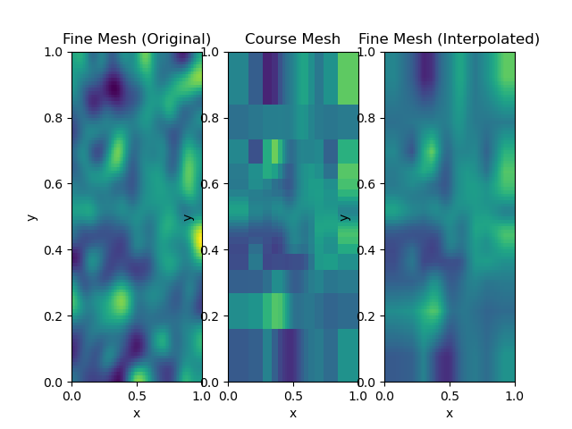

Note
Click here to download the full example code
Maps: Mesh2Mesh¶
This mapping allows you to go from one mesh to another.
Out:
/usr/share/miniconda/envs/deploy/lib/python3.7/site-packages/discretize/utils/code_utils.py:176: FutureWarning: meshTensor has been deprecated, please use unpack_widths. It will be removed in version 1.0.0 of discretize.
FutureWarning,
/usr/share/miniconda/envs/deploy/lib/python3.7/site-packages/discretize/utils/code_utils.py:157: FutureWarning: TensorMesh.getInterpolationMat has been deprecated, please use TensorMesh.get_interpolation_matrix. It will be removed in version 1.0.0 of discretize.
FutureWarning,
/usr/share/miniconda/envs/deploy/lib/python3.7/site-packages/discretize/base/base_tensor_mesh.py:468: FutureWarning: The zerosOutside keyword argument has been deprecated, please use zeros_outside. This will be removed in discretize 1.0.0
FutureWarning,
/usr/share/miniconda/envs/deploy/lib/python3.7/site-packages/discretize/utils/code_utils.py:157: FutureWarning: TensorMesh.plotImage has been deprecated, please use TensorMesh.plot_image. It will be removed in version 1.0.0 of discretize.
FutureWarning,
import discretize
from SimPEG import maps, utils
import matplotlib.pyplot as plt
def run(plotIt=True):
M = discretize.TensorMesh([100, 100])
h1 = utils.meshTensor([(6, 7, -1.5), (6, 10), (6, 7, 1.5)])
h1 = h1 / h1.sum()
M2 = discretize.TensorMesh([h1, h1])
V = utils.model_builder.randomModel(M.vnC, seed=79, its=50)
v = utils.mkvc(V)
modh = maps.Mesh2Mesh([M, M2])
modH = maps.Mesh2Mesh([M2, M])
H = modH * v
h = modh * H
if not plotIt:
return
ax = plt.subplot(131)
M.plotImage(v, ax=ax)
ax.set_title("Fine Mesh (Original)")
ax = plt.subplot(132)
M2.plotImage(H, clim=[0, 1], ax=ax)
ax.set_title("Course Mesh")
ax = plt.subplot(133)
M.plotImage(h, clim=[0, 1], ax=ax)
ax.set_title("Fine Mesh (Interpolated)")
if __name__ == "__main__":
run()
plt.show()
Total running time of the script: ( 0 minutes 0.327 seconds)
Estimated memory usage: 10 MB